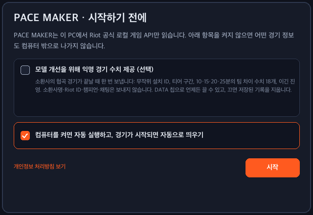
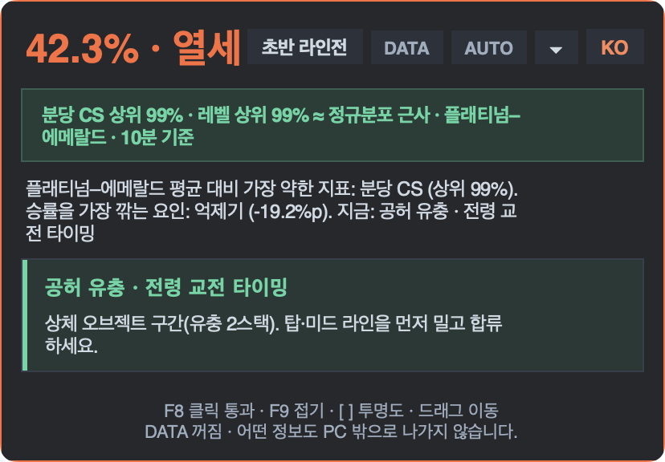
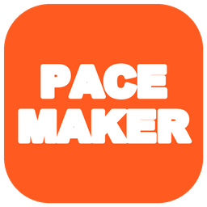

LoL Pacemaker
An AI coach that reads in-game data and plans your strategy in real time
Features
Live win rate
Calculated from team gold, kills and objectives.
Calls
Shows up to 3 things to do now.
Weak-point briefing
Shows stats below your tier's average.
Small overlay
Appears top-left only during a match. Folds into one button.
Download
LoL Pacemaker for Desktop
A desktop app that shows live win rate and calls on top of your match. Free, no ads.
Windows
Installer for Windows 10 / 11. Once installed, the HUD appears by itself when a League match starts.
macOS
App for Apple Silicon Macs (M1 or later).
If it is blocked, open System Settings → Privacy & Security and click “Open Anyway” at the bottom.
- STEP 1
Get the installer
Use the button above. If Windows shows a security warning, click More info → Run. It appears because this free open-source app has no paid certificate.
- STEP 2
Install and first run
Install with auto-start left on. The first run asks once whether to share anonymous data (off by default).
- STEP 3
Set League to Borderless
In League, set Settings → Video → Window Mode to Borderless. The HUD appears when the match starts; F9 folds it.
Global Riot Match Lookup
KR · NA · EUW · JP · BR · LANHow to Apply (4 Simple Steps)
Supported modes: Ranked · Normal · ARAM · Practice Tool



Troubleshooting & FAQ
The HUD does not appear on top of League of Legends.
Switch League's Video setting from Fullscreen to Borderless. Windows prevents any overlay from drawing above exclusive Fullscreen games.
Windows SmartScreen or macOS Gatekeeper shows a warning.
PACE MAKER is a free open-source project without a paid code-signing certificate. You can inspect 100% of the source code on GitHub and verify the SHA-256 hash before running.
It stays on "Waiting for LoL..." during a match.
The Riot local API (127.0.0.1:2999) opens only after the loading screen finishes and the match starts. Check that local firewall rules do not block loopback port 2999.
Is this safe under Riot Games' Third-Party Policy?
Yes. It reads only Riot's official local scoreboard/events API (127.0.0.1:2999) for player improvement coaching - zero memory reading, zero OCR, zero hidden enemy timers or wards.